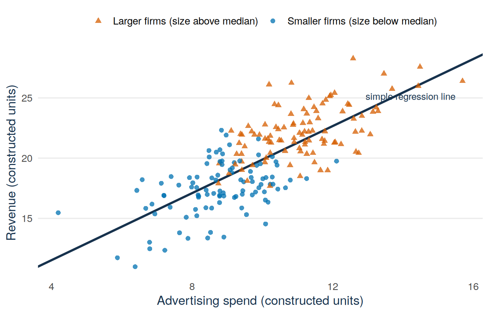
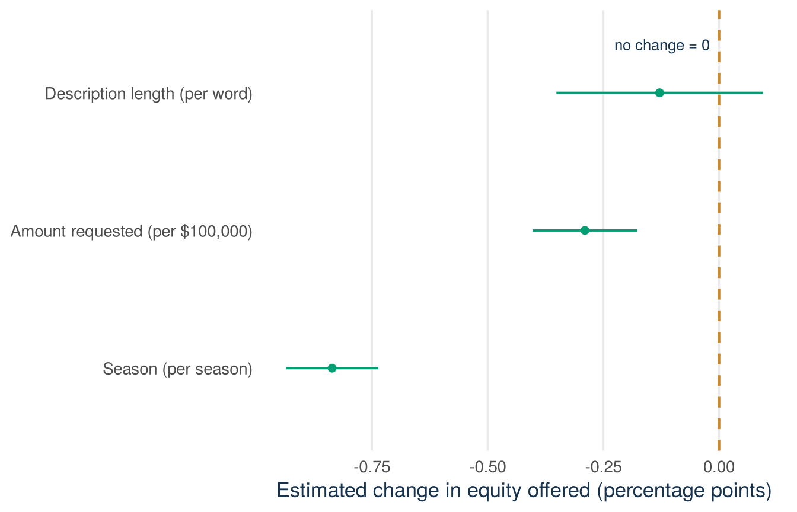

sharks <- read.csv("data/shark_tank_teaching.csv", stringsAsFactors = FALSE)
sharks$ask_1k <- sharks$ask_amount_usd / 1000
coef(lm(equity_offered_pct ~ ask_1k, data = sharks))
cor(sharks$season, sharks$ask_1k)Lecture 4: Multiple regression and what controls do
By the end of Lecture 4, you can
- interpret a coefficient in a multiple regression, holding other predictors fixed,
- explain why a coefficient can change when you add a predictor,
- compare several models side by side in one regression table and with adjusted \(R^2\),
- say what adding a control variable can and cannot achieve.
Driving question
Your sales rose after you cut the price. But it was also December. Was it the price, or the time of year? When two things change at the same time, a simple comparison cannot separate them. Multiple regression can, by comparing cases that are alike in one factor and differ in the other.
Founders who ask for more money tend to offer slightly less equity, and offers also fell over the seasons. Does the relationship between the requested amount and the equity offered stay the same when you compare pitches from the same season?
Before class
Do all the preparation below before class.
Video preparation
Watch these two parts of Brandon Foltz’s Statistics 101 series before class.
- Multiple Linear Regression, The Very Basics, from 0:39 to 20:08. Focus on what one coefficient means when the other predictors are held fixed.
- Multiple Regression, Adjusted R-square, from 0:53 to 12:06. Focus on why \(R^2\) rises with every added predictor and how adjusted \(R^2\) corrects for this.
Where these videos differ from this book
- Foltz calculates in Excel. This course uses R.
- He writes \(b\) for the coefficients. This book writes \(\hat\beta\).
The videos explain key ideas in another way. The lecture material and its notation always come first.
R warm-up. In the Lecture 3 practice you regressed the equity offered (equity_offered_pct) on the season. Now fit the simple model of the equity offered on the requested amount in thousands of dollars (ask_1k) and write down its slope. Then calculate the correlation between the season and the requested amount. Bring both numbers to class:
Code along (bring your laptop). Bring a charged laptop with RStudio and the course project open. All the code of the lecture is in this chapter, ready to copy. You can run each step yourself during the lecture and get the same numbers and figures.
If you are unsure how subscripts or equations with several variables work, review Mathematics Refresher: subscripts and indices.
Predict. In the lecture, the season is added to the model of the equity offered on the requested amount. Will the coefficient of the requested amount move clearly towards zero, move away from zero, or stay about the same? Choose one answer and write down one reason for it, using your warm-up correlation.
Lecture material
Start with a founder’s question
Lectures 1 to 3 related an outcome to one predictor. Founders rarely think about one factor at a time. Sales depend on the price, the advertising budget, and the time of year together, and a founder wants to know how much each of them matters on its own. Founders also want to compare like with like. To judge a new website, for example, you would compare weeks in the same season and with the same promotions, not any two weeks. Such events and conditions enter the analysis as control variables. Multiple regression describes how an outcome is related to several variables at the same time, and how one relationship looks when the others are held fixed.
The Shark Tank file raises such a question. Founders who ask for more money tend to offer slightly less equity. Offers also fell strongly over the seasons: in the Lecture 3 practice, each later season went with about 0.82 percentage points less equity offered, about 6% of the mean offer of 13.2%. If the requested amounts also changed over the seasons, the simple slope of the requested amount could partly reflect the season trend. A founder who wants to know what a larger request goes with should therefore compare pitches from the same season. This lecture shows how to fit and read such a model, when its coefficients differ from the simple slope, how to compare models with different numbers of predictors, and what control variables can and cannot tell you.
More than one predictor
A model with one predictor compares cases that may differ in many other ways. To hold a second factor fixed, put it into the model as well. For predictors \(X_{i1},\ldots,X_{ik}\), the model is
\[ Y_i=\beta_0+\beta_1X_{i1}+\cdots+\beta_kX_{ik}+\varepsilon_i, \]
with conditional mean
\[ E[Y_i\mid X_{i1}=x_1,\ldots,X_{ik}=x_k] =\beta_0+\beta_1x_1+\cdots+\beta_kx_k. \]
Definition
Partial regression coefficient (often called partial slope). The coefficient \(\beta_j\) of one predictor in a model with several predictors. It is the expected difference in \(Y\) that goes with a one-unit difference in \(X_j\), holding the other included predictors fixed.
Holding the other predictors fixed. The comparison is between cases that have the same values of all other predictors in the model and differ only in \(X_j\). Econometrics textbooks use the Latin term ceteris paribus, which means “other things equal”.
Write the phrase “holding the other included predictors fixed” in every interpretation of a slope from a multiple regression.
The model makes this comparison. The data do not need to contain two real pitches that are the same in every other respect. The model compares conditional means at fixed values of the included predictors.
Why coefficients change: an invented example
Before answering the Shark Tank question, look at a case where the answer is known. In an invented example we build the data ourselves, so we know the true relationships. Imagine 180 small firms in three size classes: 60 small, 60 medium, and 60 large firms. The size of the firm (size, with the values 6, 10, and 14 in invented units) influences both advertising spend (adspend) and revenue (revenue). Advertising itself adds nothing to revenue: the line of code that builds revenue contains size but not adspend. The code builds the three variables, then fits two models: revenue on advertising alone, and revenue on advertising and size. It prints the coefficients of each.
set.seed(42)
n <- 180
size <- rep(c(6, 10, 14), each = n / 3) # Z: firm size (drives both)
adspend <- 2 + 0.8 * size + rnorm(n, sd = 1) # X: bigger firms spend more
revenue <- 5 + 1.5 * size + rnorm(n, sd = 1.5) # Y: size drives revenue,
demo <- data.frame(revenue, adspend, size) # adspend does not
coef(lm(revenue ~ adspend, data = demo))(Intercept) adspend
3.362729 1.663479 coef(lm(revenue ~ adspend + size, data = demo))(Intercept) adspend size
4.97573838 -0.01861263 1.51629070 The simple slope of adspend is about \(1.66\): one more unit of advertising goes with 1.66 more units of revenue, about 8% of the mean revenue of 20. Yet we know that advertising does nothing in these data. Once size is in the model, the slope of adspend falls to about \(-0.02\), close to the zero that we built in, and the slope of size is about \(1.52\), close to the 1.5 that we built in. One step up in size class, 4 units, goes with about \(4\times1.52\approx6.1\) more units of revenue at the same advertising spend, about 30% of the mean revenue: a large difference. The simple slope counted the effect of differences in size as an effect of adspend. As a description the simple slope is correct: firms that advertise more do have higher revenue on average. As an answer to the question of what advertising does, it is wrong.
Definition
Omitted variable. A variable that is related to the outcome but is left out of the model.
Confounder. An omitted variable that is related to both a predictor and the outcome. The slope of that predictor then also picks up the relationship between the confounder and the outcome. This distortion is the omitted variable bias of Lecture 2. In the invented example, size is the confounder of adspend.
Why does the slope change so much? Figure 4.1 makes the two comparisons visible. It plots revenue (vertical axis) against advertising spend (horizontal axis) for the 180 invented firms. Each point is one firm, and its colour and shape show its size class: blue circles for small firms, green squares for medium firms, and orange triangles for large firms. The figure contains two kinds of lines, built in different ways.
The solid navy line is the simple regression line of revenue on advertising, fitted to all 180 firms at once. Its slope is the 1.66 of the first model.
The three dashed lines come from the model with
size. Its fitted equation is\[ \widehat{\text{revenue}}=4.98-0.02\,\text{adspend}+1.52\,\text{size}. \]
For each size class the code puts the size, 6, 10, or 14, into this equation. This gives one line per size class, drawn over the advertising spend of the firms in that class. All three lines have the same slope of \(-0.02\). They lie about 6.1 units of revenue apart, the \(4\times1.52\) for one step in size.
See the R code for this figure
library(ggplot2)
set.seed(42)
n <- 180
size <- rep(c(6, 10, 14), each = n / 3) # Z: firm size (drives both)
adspend <- 2 + 0.8 * size + rnorm(n, sd = 1) # X: bigger firms spend more
revenue <- 5 + 1.5 * size + rnorm(n, sd = 1.5) # Y: size drives revenue,
demo <- data.frame(revenue, adspend, size) # adspend does not
demo$group <- factor(demo$size, levels = c(6, 10, 14),
labels = c("Small firms (size 6)",
"Medium firms (size 10)",
"Large firms (size 14)"))
simple_fit <- lm(revenue ~ adspend, data = demo)
size_fit <- lm(revenue ~ adspend + size, data = demo)
# one fitted line of the model with size for each size class
within_lines <- data.frame(
group = levels(demo$group),
intercept = coef(size_fit)[1] + coef(size_fit)[3] * c(6, 10, 14),
slope = coef(size_fit)[2],
x_from = tapply(demo$adspend, demo$group, min),
x_to = tapply(demo$adspend, demo$group, max)
)
within_lines$group <- factor(within_lines$group, levels = levels(demo$group))
ggplot(demo, aes(x = adspend, y = revenue,
colour = group, shape = group)) +
geom_abline(intercept = coef(simple_fit)[1],
slope = coef(simple_fit)[2],
colour = "#17324D", linewidth = 1.1) +
geom_point(alpha = 0.75, size = 2) +
geom_segment(data = within_lines,
aes(x = x_from, xend = x_to,
y = intercept + slope * x_from,
yend = intercept + slope * x_to,
colour = group),
inherit.aes = FALSE, linetype = "dashed", linewidth = 1) +
annotate("text", x = 4.3, y = 23, label = "simple regression line",
hjust = 0, colour = "#17324D", size = 3.6) +
annotate("segment", x = 6.6, y = 22.4, xend = 9.4,
yend = coef(simple_fit)[1] + coef(simple_fit)[2] * 9.4 + 0.3,
colour = "#17324D", linewidth = 0.5,
arrow = arrow(length = unit(0.18, "cm"))) +
scale_colour_manual(values = c(
"Small firms (size 6)" = "#0072B2",
"Medium firms (size 10)" = "#009E73",
"Large firms (size 14)" = "#D55E00"
)) +
scale_shape_manual(values = c(
"Small firms (size 6)" = 16,
"Medium firms (size 10)" = 15,
"Large firms (size 14)" = 17
)) +
labs(x = "Advertising spend (invented units)",
y = "Revenue (invented units)",
colour = NULL, shape = NULL) +
theme_minimal(base_size = 13) +
theme(
panel.grid.minor = element_blank(),
panel.grid.major.x = element_blank(),
plot.caption = element_text(colour = "#5B6976"),
axis.title = element_text(colour = "#17324D"),
legend.position = "top"
)
Read the figure in two steps. First look at the whole cloud. Large firms are high on both axes, and small firms are low on both. If you move from left to right through the whole cloud, you move from small firms to large firms, and revenue rises because size rises. The solid line follows this movement, so the simple slope compares different kinds of firms. Then look within one colour. The firms of one size class differ in advertising spend, but their revenue does not rise with it: each group forms a flat cloud, and its dashed line is flat. At a given size, more advertising does not go with more revenue. The rise of the solid line comes from the jumps between the three groups, not from the slope within any of them.
A coefficient changes when the added predictor explains differences that the simple slope had picked up. This is why the phrase “holding the other included predictors fixed” matters: it says which comparison the estimate makes.
The real-data contrast: the requested amount, with and without the season
Now return to the question of the founder and make the same comparison on the Shark Tank data. From here on, money is measured in thousands of dollars: ask_1k is the requested amount divided by 1,000. One unit is $1,000 and 100 units are $100,000. Lecture 1 showed how a coefficient changes when the units of measurement change. The code fits two models of the equity offered (equity_offered_pct, in percent) for all 1,441 pitches: the simple model with the requested amount only (m_simple), and the model that adds the season (m_adjusted). It prints the coefficient table of each.
sharks <- read.csv("data/shark_tank_teaching.csv", stringsAsFactors = FALSE)
sharks$ask_1k <- sharks$ask_amount_usd / 1000
m_simple <- lm(equity_offered_pct ~ ask_1k, data = sharks)
m_adjusted <- lm(equity_offered_pct ~ ask_1k + season, data = sharks)
summary(m_simple)$coefficients Estimate Std. Error t value Pr(>|t|)
(Intercept) 14.139426599 0.2842537781 49.742264 6.497164e-315
ask_1k -0.003286697 0.0006328593 -5.193408 2.360816e-07summary(m_adjusted)$coefficients Estimate Std. Error t value Pr(>|t|)
(Intercept) 21.184602524 0.4832780585 43.835225 3.011189e-267
ask_1k -0.002871699 0.0005766936 -4.979592 7.141949e-07
season -0.814330667 0.0471758592 -17.261597 8.004324e-61In the simple model the slope of ask_1k is about \(-0.00329\), with standard error \(0.00063\): each additional $1,000 requested goes with about 0.0033 percentage points less equity offered. With the season in the model the slope is about \(-0.00287\), with standard error \(0.00058\). Holding the season fixed, each additional $1,000 requested goes with about 0.0029 percentage points less equity offered. The slope moves towards zero by about 13%. This answers the prediction question from before class: the coefficient stays about the same, and the relationship between the requested amount and the equity offered is largely stable when the season is held fixed. The season itself has a slope of about \(-0.814\) percentage points per season, close to the simple season trend of Lecture 3.
Why does the slope move a little, and why not more? The correlation from the warm-up between the season and the requested amount is only 0.04, so later pitches asked for only slightly larger amounts. But the season is strongly related to the equity offered. Pitches with large requests came a little more often from later seasons, where offers were lower anyway, so the simple slope picked up a small part of the season trend. Holding the season fixed removes this part. In the invented example, size moved closely together with advertising and removed the whole simple slope. Here the season hardly moves together with the requested amount, so it removes only a small part.
The standard error of the slope also falls, from 0.00063 to 0.00058. The season explains a large part of the differences in the equity offered that the requested amount leaves unexplained, so the remaining noise around the fitted values is smaller and the slope is estimated more precisely. The section on control variables below returns to this.
Is the relationship large? The code below calculates the benchmarks of Lecture 3: the mean and the standard deviation of the equity offered, the standard deviation of ask_1k, the fitted change per $100,000 in both models, and the fitted change for a request one standard deviation higher in the model with the season.
round(c(
mean_equity = mean(sharks$equity_offered_pct),
sd_equity = sd(sharks$equity_offered_pct),
sd_ask_1k = sd(sharks$ask_1k),
per_100k_simple = unname(100 * coef(m_simple)["ask_1k"]),
per_100k_adjusted = unname(100 * coef(m_adjusted)["ask_1k"]),
one_sd_adjusted = unname(sd(sharks$ask_1k) * coef(m_adjusted)["ask_1k"])
), 3) mean_equity sd_equity sd_ask_1k per_100k_simple
13.208 8.444 348.495 -0.329
per_100k_adjusted one_sd_adjusted
-0.287 -1.001 The mean equity offered is 13.2% and its standard deviation is 8.4 percentage points. Per $100,000 more requested, the equity offered is about 0.33 percentage points lower in the simple model and about 0.29 percentage points lower at the same season. This is about 2.5% and 2.2% of the mean offer. The Mathematics Refresher explains the difference between percentage points and percent. Typical requests differ by much more than $100,000: the standard deviation of the requested amount is about $348,500. A request one standard deviation higher goes with about 1.0 percentage point less equity offered at the same season. This is about 8% of the mean offer and 0.12 standard deviations of the outcome. So the relationship is clearly different from zero (\(t\approx-5.0\)), but small in business terms. This is the lesson of Significant is not the same as large in Lecture 3.
The stable slope is useful to know. The association between a larger request and a smaller equity offer is not a by-product of the season trend, because it also holds among pitches from the same season. As with every model in this lecture, this statement covers the variables in the model. The section on control variables below discusses what lies outside it.
A three-predictor Shark Tank model
A model can hold several factors fixed at once. To practise reading such a model, add a third predictor that describes the pitch itself. The outcome is the equity that the founders offered at the start of the pitch (equity_offered_pct), in percent. The predictors are:
season, the season number, 1 to 16,ask_1k, the requested amount in thousands of dollars,description_words, the number of words in the short description of the business in the data source.
The description length is a rough measure of how much there is to say about a business. A longer description may point to a more developed venture, whose founders may offer less equity. The code fits the model and prints the full summary, in the same layout as in Lecture 3.
equity_model <- lm(
equity_offered_pct ~ season + ask_1k + description_words,
data = sharks
)
summary(equity_model)
Call:
lm(formula = equity_offered_pct ~ season + ask_1k + description_words,
data = sharks)
Residuals:
Min 1Q Median 3Q Max
-15.295 -4.776 -1.283 3.288 82.106
Coefficients:
Estimate Std. Error t value Pr(>|t|)
(Intercept) 22.0249310 0.8878522 24.807 < 2e-16 ***
season -0.8361515 0.0509825 -16.401 < 2e-16 ***
ask_1k -0.0028975 0.0005771 -5.021 5.79e-07 ***
description_words -0.1283379 0.1137527 -1.128 0.259
---
Signif. codes: 0 '***' 0.001 '**' 0.01 '*' 0.05 '.' 0.1 ' ' 1
Residual standard error: 7.619 on 1437 degrees of freedom
Multiple R-squared: 0.1876, Adjusted R-squared: 0.1859
F-statistic: 110.6 on 3 and 1437 DF, p-value: < 2.2e-16The output has one row for each coefficient, with its estimate, standard error, t statistic, and p-value. The column of estimates gives the fitted equation, approximately
\[ \widehat{\text{equity}} =22.025-0.836\,\text{season}-0.0029\,\text{ask\_1k} -0.128\,\text{description\_words}. \]
The bottom lines describe the whole model. The residual standard error of 7.6 percentage points is the typical distance between an actual and a fitted offer. This is a little less than the standard deviation of the outcome (8.4). \(R^2\) is 0.188, so the three predictors together account for about 19% of the variation in the equity offered. The F statistic of 110.6 tests whether all three slopes are zero at once, and its p-value is far below 0.05. The next step is to read each slope.
The coefficient-interpretation protocol
A slope helps a reader only if the reader can tell what was compared, in which units, and among which cases. Use the same five checks every time you interpret a slope:
- Estimate and direction: state the fitted change and its sign.
- Predictor step and unit: say what a one-unit increase means.
- Outcome unit: state the unit in which the outcome changes.
- Conditioning: name the other included predictors that are held fixed.
- Scope: name the analysed records and write “associated with”, unless the data come from an experiment that justifies a causal claim.
The three predictors have different units:
| Term | A one-unit increase means | Coefficient unit |
|---|---|---|
season |
one later season | equity percentage points per season |
ask_1k |
$1,000 more requested | equity percentage points per $1,000 |
description_words |
one additional word | equity percentage points per word |
Apply the five checks to each slope in turn. All three sentences are about the 1,441 recorded pitches:
- Season. At the same requested amount and description length, one later season is associated with about \(0.836\) percentage points less equity offered. The t statistic of about \(-16.4\) shows that the slope is clearly different from zero. It is also large: per season it is about 6% of the mean offer of 13.2%, and over five seasons it adds up to about 4.2 percentage points, a third of the mean offer.
- Requested amount. At the same season and description length, an additional $1,000 requested is associated with about \(0.0029\) percentage points less equity offered. The number is tiny because the unit step is tiny. Per additional $100,000 the association is about \(0.29\) percentage points, about 2% of the mean offer: small, as in the model with the season only. The t statistic (about \(-5.0\)) does not depend on the unit.
- Description length. At the same season and requested amount, one additional description word is associated with about \(0.128\) percentage points less equity offered, about 1% of the mean offer. This estimate is not statistically distinguishable from zero at 5% (p \(\approx\) 0.26). Report the estimate anyway. “Not significant” does not mean “exactly zero”. It means that the data are consistent with a range of values that includes zero. The section on size below shows which values this range still rules out.
Check: the slope of the requested amount was −0.00329 alone, −0.00287 with the season, and −0.00290 with three predictors. Contradiction?
No. The three coefficients answer different questions. \(-0.00329\) holds nothing fixed. \(-0.00287\) holds the season fixed. \(-0.00290\) holds the season and the description length fixed. Adding a predictor changes what is held fixed, so the coefficient may change. Here all three changes are small, because the requested amount moves together with neither the season nor the description length.
Three models in one table
A reader who wants to know whether a coefficient changes when predictors are added needs all models at once, not three separate outputs. This lecture has now fitted three models of the equity offered (equity_offered_pct): the requested amount alone (m_simple), the requested amount and the season (m_adjusted), and the three-predictor model (equity_model). Research papers show such models side by side in one table, with one column per model. The table needs the estimate and standard error of every coefficient, which the outputs above already show, and the fit of every model. The code below collects the number of observations, \(R^2\), and adjusted \(R^2\) of the three models. Adjusted \(R^2\) is introduced in the next section.
models <- list("(1)" = m_simple, "(2)" = m_adjusted, "(3)" = equity_model)
round(sapply(models, function(m) c(
n = nobs(m),
r_squared = summary(m)$r.squared,
adj_r_squared = summary(m)$adj.r.squared
)), 4) (1) (2) (3)
n 1441.0000 1441.0000 1441.0000
r_squared 0.0184 0.1869 0.1876
adj_r_squared 0.0177 0.1858 0.1859The table below collects these numbers and the coefficients from the outputs above.
| (1) | (2) | (3) | |
|---|---|---|---|
| Amount requested ($1,000s) | −0.00329*** | −0.00287*** | −0.00290*** |
| (0.00063) | (0.00058) | (0.00058) | |
| Season | −0.814*** | −0.836*** | |
| (0.047) | (0.051) | ||
| Description length (words) | −0.128 | ||
| (0.114) | |||
| Intercept | 14.139*** | 21.185*** | 22.025*** |
| (0.284) | (0.483) | (0.888) | |
| Observations | 1,441 | 1,441 | 1,441 |
| \(R^2\) | 0.018 | 0.187 | 0.188 |
| Adjusted \(R^2\) | 0.018 | 0.186 | 0.186 |
Outcome: equity offered (%). Ordinary least squares. Standard errors in parentheses. All three columns use the same 1,441 pitches. The row of the requested amount has more decimals because its unit step, $1,000, is small. * p < 0.05, ** p < 0.01, *** p < 0.001.
Each column is one model and each row is one predictor. An empty space means that the predictor is not in that model. The number in parentheses under a coefficient is its standard error, and the stars show the p-value of the two-sided test of that coefficient against zero. Read along a row to see how a coefficient changes when predictors are added: the coefficient of the requested amount moves from \(-0.00329\) to \(-0.00287\) when the season is added, and stays at \(-0.00290\) when the description length is added. Read down a column to see one model: column (3) is equity_model. The bottom rows give the number of observations and the fit of each model. This is the layout to use for regression results in your thesis.
The fit rows tell a clear story. The requested amount alone explains less than 2% of the variation in the equity offered (\(R^2=0.018\)). Adding the season raises \(R^2\) to 0.187, so the two predictors together explain about 19%. Adding the description length raises \(R^2\) only from 0.1869 to 0.1876. Is this last, tiny rise a real improvement? \(R^2\) cannot answer this question, and the next section shows why.
Adjusted R²: comparing models with different numbers of predictors
A founder who compares models wants to know whether an extra predictor improves the model or only makes it more complicated. \(R^2\) is a poor guide for this choice, because it never falls when a predictor is added. Recall from the Lecture 3 practice that adding a predictor cannot increase SSE: least squares could always set the new slope to zero and keep the old fit. Even a column of random numbers raises \(R^2\) a little, because the fitted model uses the chance patterns in that column to make SSE slightly smaller. So a model with more predictors always looks at least as good by \(R^2\), whether or not the new predictors are useful.
Adjusted \(R^2\) corrects for this. It compares SSE and SST after dividing each by its degrees of freedom, so that every predictor has a price.
Definition
Adjusted \(R^2\). For a model with \(k\) predictors and \(n\) observations,
\[ R^2_{\text{adjusted}} =1-\frac{\text{SSE}/(n-k-1)}{\text{SST}/(n-1)} =1-(1-R^2)\,\frac{n-1}{n-k-1}. \]
Written as \(R^2\) minus a penalty, the same formula reads
\[ R^2_{\text{adjusted}} =R^2-\underbrace{(1-R^2)\,\frac{k}{n-k-1}}_{\text{penalty}}. \]
Use adjusted \(R^2\) to compare models with different numbers of predictors, fitted to the same outcome and the same observations.
The penalty has three parts, and each has an intuitive meaning.
- The number of predictors \(k\): every added predictor raises the penalty, so a new predictor must earn its place.
- The residual degrees of freedom \(n-k-1\): with many observations per predictor the penalty is small, and with few observations it is large.
- The unexplained share \(1-R^2\): the penalty is a share of the variation that the model still leaves unexplained.
Adding a predictor therefore has two opposite consequences. SSE falls, which raises \(R^2\), and \(k\) rises, which raises the penalty. Adjusted \(R^2\) rises only when the new predictor lowers SSE by more than a predictor without any relationship to the outcome would by chance. Otherwise it falls. When the predictors add almost nothing, adjusted \(R^2\) can even be negative.
Example 4.1 (Worked example: when more predictors lower adjusted R²) An invented model with \(k=1\) predictor, fitted to \(n=21\) weeks of sales, has \(R^2=0.50\). Its adjusted \(R^2\) is
\[ 0.50-(1-0.50)\,\frac{1}{21-1-1}=0.50-0.50\times\frac{1}{19} =0.50-0.026=0.474. \]
Adding four more predictors raises \(R^2\) to 0.55. Now \(k=5\) and
\[ 0.55-(1-0.55)\,\frac{5}{21-5-1}=0.55-0.45\times\frac{5}{15} =0.55-0.15=0.40. \]
\(R^2\) rose by 5 percentage points, but adjusted \(R^2\) fell from 0.474 to 0.40. Four extra predictors explained too little to be worth their price with only 21 observations.
In the regression table the sample is large, \(n=1{,}441\), so the penalty is tiny. For model (3), with \(k=3\), it is \((1-0.1876)\times3/1437\approx0.0017\), so adjusted \(R^2\) is \(0.1876-0.0017 =0.1859\). Adding the season to the requested amount raises adjusted \(R^2\) from 0.018 to 0.186: the season adds real explanatory power. Adding the description length leaves adjusted \(R^2\) practically unchanged at 0.186: this predictor adds almost nothing to the fit.
The penalty matters most when there are many predictors for few observations. The code below shows this. It takes 50 random pitches and fits the model with the season and the requested amount. It then adds ten columns of pure random numbers, which by construction have nothing to do with the equity offered, and prints \(R^2\) and adjusted \(R^2\) of both models.
set.seed(42)
small <- sharks[sample(nrow(sharks), 50),
c("equity_offered_pct", "season", "ask_1k")]
for (j in 1:10) small[[paste0("noise", j)]] <- rnorm(50)
fit_two <- lm(equity_offered_pct ~ season + ask_1k, data = small)
fit_noise <- lm(equity_offered_pct ~ ., data = small)
round(c(r2_two = summary(fit_two)$r.squared,
adj_r2_two = summary(fit_two)$adj.r.squared,
r2_noise = summary(fit_noise)$r.squared,
adj_r2_noise = summary(fit_noise)$adj.r.squared), 3) r2_two adj_r2_two r2_noise adj_r2_noise
0.269 0.237 0.378 0.176 With the two real predictors, \(R^2\) is 0.269 and adjusted \(R^2\) is 0.237. With the ten random columns added, \(R^2\) rises to 0.378. Ten useless predictors seem to explain 11 percentage points more of the variation, a rise of 40%. Adjusted \(R^2\) falls to 0.176. Its penalty for the twelve predictors is \((1-0.378)\times12/(50-12-1)\approx0.20\), larger than the apparent gain in \(R^2\). So adjusted \(R^2\) correctly shows that the random columns add nothing real, while \(R^2\) alone would suggest a better model.
Scaling to comparisons readers care about
The table and adjusted \(R^2\) help you choose a model. Once you have chosen one, you report its coefficients to other people: the readers of your report or thesis, an investor, or your own team. These readers rarely think in the units of the table. An investor asks what a request of half a million dollars more goes with, not one of $1,000 more, and your team plans over several seasons rather than one. So scale each coefficient to a step that matters to these readers: fitted change = coefficient × number of unit steps, holding the other included predictors fixed.
Example 4.2 (Worked example: five seasons, half a million dollars, two words) Holding the other included predictors fixed in equity_model:
- Five later seasons: \(5\times(-0.836)=-4.18\) fitted equity percentage points.
- $500,000 more requested: \(500{,}000/1{,}000 = 500\) units of
ask_1k, so \(500\times(-0.0029)=-1.45\) fitted percentage points. - Two additional description words: \(2\times(-0.128)=-0.26\) fitted percentage points. The descriptions are short, and two words is about one standard deviation of their length, as the next section shows. This coefficient is not significantly different from zero, so the scaled version is not either.
Changing the units of measurement of a predictor changes the coefficient and its standard error by the same factor. It does not change the fitted values, the t statistic, or the relationship itself. A coefficient “per dollar” of \(-0.0000029\) would be correct but hard to read. Per $1,000 is readable. Per $100,000 is often the best unit for a sentence.
Significant is not the same as large
Scaling gives the change in readable units. Whether that change is large is a separate question. Lecture 3 showed that a small p-value does not make a coefficient large, and that a result without stars can still be informative (Significant is not the same as large). The same holds in a model with several predictors. The code below calculates the benchmarks for equity_model: the fitted change for five seasons and for a request one standard deviation higher, the mean and the standard deviation of the description length, and the 95% interval of the description slope for a step of one standard deviation.
b <- coef(equity_model)
ci_words <- confint(equity_model)["description_words", ]
round(c(
five_seasons = unname(5 * b["season"]),
one_sd_ask = unname(sd(sharks$ask_1k) * b["ask_1k"]),
mean_words = mean(sharks$description_words),
sd_words = sd(sharks$description_words),
ci_one_sd_words = ci_words * sd(sharks$description_words)
), 3) five_seasons one_sd_ask mean_words
-4.181 -1.010 4.995
sd_words ci_one_sd_words.2.5 % ci_one_sd_words.97.5 %
1.910 -0.671 0.181 With the mean equity offered of 13.2% and its standard deviation of 8.4 percentage points as benchmarks:
- five later seasons go with 4.18 fewer percentage points, 32% of the mean offer and half a standard deviation of the outcome, a large difference,
- a request one standard deviation higher, about $348,500, goes with 1.01 fewer percentage points, 8% of the mean and 0.12 standard deviations, a small difference although the coefficient has three stars,
- the description length has no stars, but its interval is still informative: the descriptions have a mean of 5 words, and for a step of one standard deviation, about 1.9 words, the 95% interval runs from \(-0.67\) to \(0.18\) percentage points, so the data rule out an association larger than about 5% of the mean offer for typical differences in description length.
Report the size next to the significance every time.
Try it: three seasons later and $200,000 more
Two pitches have the same description length. One is three seasons later and requests $200,000 more. Complete the steps before opening the answer.
Step 1 (given). Three seasons contribute \(3\times(-0.836)\) fitted percentage points.
Step 2 (you). Convert $200,000 into ask_1k units (thousands of dollars). Multiply by the ask_1k coefficient, about \(-0.0029\) percentage points per $1,000.
Step 3 (you). Add the two contributions. This is allowed because the model is additive: each predictor has its own term, and the terms are added up. State the combined fitted difference in one sentence that passes the five checks of the coefficient-interpretation protocol.
Check your answer
\(200{,}000/1{,}000=200\) units, so the request contributes \(200\times(-0.0029)\approx-0.58\). Combined:
\[ 3(-0.836)+200(-0.0029)\approx-2.51-0.58=-3.09 \]
percentage points. Sentence: among the recorded pitches, a pitch three seasons later that requests $200,000 more is fitted to offer about 3.1 percentage points less equity, holding description length fixed.
b <- coef(equity_model)
3 * b["season"] + 200 * b["ask_1k"] season
-3.087963 What control variables can and cannot do
The Shark Tank models added the season to check the relationship between the requested amount and the equity offered, and the invented example added firm size. Before you add variables to your own models, it helps to know what this step can achieve. A control variable (often just called a control) is a predictor that is included in the model so that the comparison holds it fixed. Including a control variable can
- make a comparison fairer, because the compared cases are alike on the measured variables,
- reduce the residual variation, which makes confidence intervals narrower, as the season did for the slope of the requested amount,
- show that a simple association partly came from comparing different kinds of cases.
A control variable also has a cost when it moves closely together with the predictor that you are interested in. Take the invented example of firm size and advertising. With size in the model, the advertising slope compares firms of the same size. But firms of the same size differ only a little in advertising spend. In Figure 4.1, the points of one colour cover a much narrower range of advertising spend than all points together. With so little variation in advertising, the data say less about its slope. Its standard error grows, and its confidence interval gets wider. The code below prints the correlation between advertising spend and size, the standard deviation of advertising spend among all firms and within each size class, and then the advertising slope and its standard error, first without and then with size in the model.
round(cor(demo$adspend, demo$size), 2)[1] 0.93# spread of adspend among all firms and within each size class
round(c(all_firms = sd(demo$adspend),
tapply(demo$adspend, demo$size, sd)), 2)all_firms 6 10 14
2.76 1.15 0.91 0.88 # slope of adspend and its standard error, without and with size
round(summary(lm(revenue ~ adspend, data = demo))$coefficients["adspend", 1:2], 3) Estimate Std. Error
1.663 0.061 round(summary(lm(revenue ~ adspend + size, data = demo))$coefficients["adspend", 1:2], 3) Estimate Std. Error
-0.019 0.106 Advertising spend and size have a correlation of about 0.93, close to the maximum of 1. Among all firms, advertising spend has a standard deviation of about 2.8. Within a size class it is only between about 0.9 and 1.15, roughly a third of that. The standard error of the advertising slope is about 0.06 without size and about 0.11 with size in the model, almost twice as large. Here the control is still needed, because without it the slope mixes advertising with size. But the estimate that you get is less precise. The section on multicollinearity below explains this cost and what to do about it.
Including a control variable cannot
- adjust for variables that were not measured,
- fix reverse causality, where the outcome influences the predictor,
- repair selection, where the cases in the file are not typical of the cases you want to talk about,
- remove errors in how a variable was measured.
A control variable is simply a predictor like any other. The word “control” does not make any coefficient causal. Only the way the data were produced can make a coefficient causal, for example when the data come from an experiment.
Check: which of these four problems does adding
season address?
(a) Pitches with large requests come slightly more often from later seasons, when offers were lower anyway. (b) The experience of the founder is not recorded. (c) The equity offered may influence how much is asked. (d) Only pitches that were broadcast are in the file.
Only (a). The season is measured, and holding season fixed removes the season trend from the comparison of requested amounts. Problem (b) is an unmeasured confounder, (c) is reverse causality, and (d) is selection. Adding a measured control variable does not solve any of these three.
Assumptions extend to the full predictor set
The standard errors, t statistics, and intervals in the table above are only reliable if the model assumptions hold. For multiple regression, the assumptions of Lecture 2 apply to the whole set of included predictors, and one new assumption is added in the last row of the table below.
| Assumption | What it says with several predictors | How to check it | What goes wrong if it fails |
|---|---|---|---|
| Linearity | The average of \(Y\) is linear in the included terms: \(E[Y\mid X_1,\ldots,X_k]=\beta_0+\beta_1X_1+\cdots+\beta_kX_k\) | Plot the residuals against the fitted values and against each predictor. Points spread evenly around zero agree with the assumption, a curve does not | The slopes miss part of the pattern, and the fitted values are wrong in some parts of the range |
| Homoskedasticity (constant variance) | The errors have the same variance at all values of the predictors | Residuals against fitted values. A band of equal width agrees with the assumption, a spread that grows or shrinks along the horizontal axis does not | The slopes stay unbiased, but the usual standard errors, tests, and intervals are wrong |
| Normality of the errors | The errors follow a normal distribution | A normal Q-Q plot of the residuals. Points close to the straight line agree with the assumption | In small samples the t and F distributions are no longer exact. In large samples this matters little |
| Independence (random sampling) | The error of one row says nothing about the error of another row | Knowledge of how the data were collected | The usual standard errors are often too small |
| Zero conditional mean (exogeneity): no omitted confounder | The error averages zero at all values of the included predictors | Knowledge of how the predictors came about. No plot can show it | A slope is not the effect of changing its predictor. It still describes how average outcomes differ, holding the other included predictors fixed |
| No perfect multicollinearity (new) | No predictor can be calculated exactly from the others, for example as the sum of two of them | R reports NA for a coefficient and leaves the term out. For high but not perfect correlations, look at the correlations among the predictors with cor() |
With perfect multicollinearity a coefficient cannot be estimated at all. With high correlations the single slopes are imprecise |
The last assumption is new because it can only fail when a model has more than one predictor. It needs two related terms.
Definition
Multicollinearity. A high correlation among the predictors. It does not bias the coefficients. It makes the single coefficients imprecise and unstable, because the data contain little information to separate predictors that move together.
Perfect multicollinearity. One predictor can be calculated exactly from the others. Then one coefficient cannot be estimated at all, and R leaves one term out of the model.
The invented example showed multicollinearity at work: with a correlation of 0.93 between advertising and size, the standard error of the advertising slope almost doubled, from about 0.06 to about 0.11. Why does this happen? With size in the model, the advertising slope is estimated only from comparisons between firms of the same size that differ in advertising. When two predictors move together this closely, the data contain few such cases. A firm with high advertising spend is almost always a large firm, so firms whose advertising changes while their size stays fixed are rare. In the invented data, advertising spend varies about three times less within a size class than among all firms. The separate slope of advertising therefore rests on little information, and little information means a large standard error and a wide interval. The model still estimates both slopes without bias. The data simply cannot tell the two predictors apart very well.
Multicollinearity does not harm prediction: the fitted values of the model stay just as accurate. It matters when you want to read single slopes. In practice, you can
- look at the correlations among the predictors with
cor()before you read single slopes, and treat very high correlations, such as 0.9 or more, as a warning, - keep a control variable that is a confounder even though it widens the interval, because dropping
sizehere would give a precise but misleading slope of 1.66 instead of a slope close to zero, - keep only one of two predictors, or combine them, when both measure the same thing, for example two measures of firm size,
- collect more data, ideally including cases in which the two predictors move apart, such as large firms with little advertising,
- report the wide interval openly, and test the two predictors together with the joint test of Lecture 5, which can show that they matter jointly even when neither slope is precise on its own.
For the three-predictor Shark Tank model, the code below prints the correlations among the three predictors.
round(cor(sharks[, c("season", "ask_1k", "description_words")]), 2) season ask_1k description_words
season 1.00 0.04 -0.38
ask_1k 0.04 1.00 -0.05
description_words -0.38 -0.05 1.00Each number is the correlation between the predictors of its row and its column, and the diagonal shows that each predictor has a correlation of 1 with itself. All correlations are small. The strongest is between the season and the description length, at \(-0.38\): later seasons have slightly shorter descriptions. This is far from 0.9, so multicollinearity is not a concern in this model.
A coefficient plot keeps units visible
A table gives exact numbers, but readers often want to see at a glance which estimates are clearly different from zero. A coefficient plot shows this. Figure 4.2 shows the three slope estimates of equity_model with their 95% confidence intervals. The code takes the estimates and intervals from the model, rescales the requested amount to steps of $100,000, and draws one row per predictor.
See the R code for this figure
library(ggplot2)
sharks <- read.csv("data/shark_tank_teaching.csv", stringsAsFactors = FALSE)
sharks$ask_1k <- sharks$ask_amount_usd / 1000
equity_model <- lm(
equity_offered_pct ~ season + ask_1k + description_words,
data = sharks
)
ci <- confint(equity_model)[-1, , drop = FALSE]
# Show the requested amount per $100,000 instead of per $1,000 (x 100),
# so that its estimate and interval are visible on the same axis
unit_factor <- c(1, 100, 1)
term_labels <- c("Season (per season)", "Amount requested (per $100,000)",
"Description length (per word)")
coef_df <- data.frame(
term = factor(term_labels, levels = term_labels),
estimate = coef(equity_model)[-1] * unit_factor,
lower = ci[, 1] * unit_factor,
upper = ci[, 2] * unit_factor
)
ggplot(coef_df, aes(x = estimate, y = term)) +
geom_vline(xintercept = 0, colour = "#C98B2E",
linetype = "dashed", linewidth = 0.8) +
geom_pointrange(aes(xmin = lower, xmax = upper),
colour = "#009E73", linewidth = 0.7, fatten = 2.6) +
annotate("text", x = -0.02, y = 3.35, label = "no change = 0",
hjust = 1, colour = "#17324D", size = 3.4) +
labs(x = "Estimated change in equity offered (percentage points)",
y = NULL) +
theme_minimal(base_size = 13) +
theme(
panel.grid.minor = element_blank(),
panel.grid.major.y = element_blank(),
plot.caption = element_text(colour = "#5B6976"),
axis.title = element_text(colour = "#17324D")
)
Read Figure 4.2 with the five steps for reading a figure:
- Unit and variables: the rows are the predictors. The horizontal axis is the estimated change in the equity offered, in percentage points.
- Scales: each estimate is per one unit of its own predictor: per season, per $100,000 requested, per word. The rows are not on a common scale. The model uses
ask_1k, in $1,000s, so its coefficient is about \(-0.0029\). Per $1,000 that change is so small that its dot and interval would sit on the zero line. The plot therefore shows it per $100,000: \(100\times(-0.0029)\approx-0.29\) percentage points. - One element: a dot is a coefficient estimate, and its horizontal line is the 95% confidence interval. The dashed line marks zero.
- Pattern: the intervals for the season and for the requested amount lie clearly left of zero. The interval for the description length crosses zero. The distance from zero in this plot depends on the unit that you choose. It does not show how strong the evidence is: for that, look at the t statistic or at whether the interval contains zero.
- Limits: the intervals show sampling uncertainty under the model, among these recorded pitches.
What an adjusted coefficient can and cannot say
- “Holding fixed” covers only the predictors in the model. The maturity of the venture, its revenue, and the experience of the founder are not held fixed.
- If a coefficient stays stable across models, the measured control variables do not explain it. This proves nothing about variables that were not measured.
- The equity offered is the opening offer in the pitch, not a completed investment.
What you can do with it: add the control variables that a critic would name first. If your coefficient stays about the same after you add them, you can act on it for cheap decisions. For expensive decisions, test it first.
Answering the driving question
Yes, the relationship between the requested amount and the equity offered is largely stable when you compare pitches from the same season. Without the season, each additional $100,000 requested goes with about 0.33 percentage points less equity offered. At the same season it is about 0.29 percentage points, a change of about 13%, and with the description length also held fixed it stays at 0.29. The season hardly moved together with the requested amount (correlation 0.04), so the season trend explained only a small part of the simple slope, even though the trend itself is large: about 0.8 percentage points per season. The relationship is clearly different from zero (\(t\approx-5.0\)), but it is small in business terms: about 2% of the mean offer of 13.2% per $100,000, and about 1 percentage point for a request one standard deviation, about $348,500, higher.
As a founder deciding how much money to ask for, you might expect that asking for $500,000 more goes with an opening offer about 1.4 percentage points lower than that of other founders in the same season (\(500\times0.00287\approx1.4\)). This holds under the assumption that the recorded pitches are typical of pitches like yours. The season matters much more: five seasons go with about 4.2 percentage points less equity offered. So when you set your own opening offer, compare it with recent pitches rather than with the average over all seasons.
A founder’s decision (invented example)
You run a campus venture that sells meal boxes. In weeks with lower prices you get more orders: the simple slope is 60 more orders per euro of price cut. But you lowered prices mainly in exam weeks, when demand is high anyway. With exam weeks in the model as a control variable, the slope is 25 orders per euro. You sell about 150 meal boxes a week at a margin of 4 euros per box. Should you cut the price by 1 euro?
Try it yourself first.
- Which of the two slopes describes what a price cut does, and why?
- How much margin does the cut cost you on the 150 boxes that you would sell anyway?
- After the cut, each extra order earns 3 euros. How much margin do the extra orders bring, with each of the two slopes?
- Decide.
See the solution
- The slope with the control variable, 25 orders per euro. The simple slope also counts the higher demand in exam weeks as an effect of the price.
- \(150\times1=150\) euros per week.
- With the simple slope: \(60\times3=180\) euros. With the adjusted slope: \(25\times3=75\) euros.
- With the simple slope the cut would look profitable, because 180 is more than 150. With the adjusted slope it is not, because 75 is less than 150. The decision: keep the price. The control variable changed the decision.
This lecture gave you multiple regression: one coefficient per predictor, read while the other included predictors are held fixed, a regression table to see how a coefficient changes when control variables are added, and adjusted \(R^2\) to compare models of different size. All predictors so far were numbers, such as the season or the requested amount. Many questions that founders ask are about groups instead. Does an online shop sell more than a market stall? Did the customers who saw a new website version buy more than those who saw the old one? Do teams of women open their pitch with different equity offers from teams of men or mixed teams? Such categories cannot enter a model as ordinary numbers. Lecture 5 shows how they enter a regression, how to read the result of an A/B test as a regression, and how to test whether a whole set of terms matters at once.
Next: Lecture 5 adds categories as predictors and introduces the joint test of several coefficients.
After class
After the lecture, work through all the practice below.
Read the lecture material
Read the Lecture material section above from start to end. The lecture covered the main points. The text has every step, every example, and all the code, including parts that were not shown in class. Note what is still unclear and bring it to the next tutorial, or ask Tilly.
Recall questions
- Which phrase belongs in every interpretation of a slope from a multiple regression?
- Why can a coefficient change after another predictor is added?
- What does the zero conditional mean condition (no omitted confounder) say, and when is it needed?
- Why does adding control variables not make a coefficient causal?
- What problem can strongly correlated predictors create?
- Which five elements belong in the interpretation of a slope?
- Why can adjusted \(R^2\) fall when a predictor is added, while \(R^2\) cannot?
Check your answers
- “Holding the other included predictors fixed.”
- The simple slope also picks up the relationship between the outcome and an omitted variable that is related to the predictor. When that variable is added, the slope no longer includes this part.
- The error averages zero at every value of the predictors: nothing outside the model drives both an included predictor and the outcome. It is needed only when a coefficient is read as the effect of changing that predictor.
- Unmeasured confounders, selection, reverse causality, and measurement error can all remain after a control variable is added.
- Imprecise and unstable estimates of the single coefficients. With perfect multicollinearity R cannot estimate all coefficients and leaves one term out.
- Estimate and direction, predictor step and unit, outcome unit, the predictors that are held fixed, and the scope (which records, association or effect).
- Adding a predictor cannot increase SSE, so \(R^2\) cannot fall. Adjusted \(R^2\) subtracts the penalty \((1-R^2)\,k/(n-k-1)\), which grows with every added predictor. If the new predictor lowers SSE by less than the penalty grows, adjusted \(R^2\) falls.
Finish a half-worked example: interpret the two-predictor model
Take the two-predictor model m_adjusted, column (2) of the regression table. It regresses the equity offered by the founder, in percent, on the season and the requested amount in thousands of dollars (ask_1k), using all 1,441 pitches. Its fitted slopes are \(-0.814\) per season and \(-0.0029\) per $1,000 requested. The mean equity offered is 13.2%. Interpret both slopes with units and with the predictor that is held fixed, and judge the size of the requested-amount slope per $100,000.
Step 1 (given). Season: holding the requested amount fixed, among the recorded pitches, one later season is associated with about 0.814 percentage points less equity offered. This is 6% of the mean offer per season.
Step 2 (you). Write the same kind of sentence for ask_1k, per $100,000, and compare the result with the mean offer.
Check your answer
Holding the season fixed, among the recorded pitches, an additional $100,000 requested is associated with about 0.29 percentage points less equity offered (\(100\times(-0.0029)\)). This is about 2% of the mean offer of 13.2%, a small difference, although the coefficient is clearly different from zero (t \(\approx-5.0\)).
Practice
All items use the three-predictor model equity_model. It regresses the equity offered by the founder, in percent, on the season, the requested amount in thousands of dollars (ask_1k), and the number of words in the description (description_words), using all 1,441 pitches. The mean equity offered is 13.2% and its standard deviation is 8.4 percentage points.
- Calculate 95% confidence intervals with
confint(equity_model). - Test each coefficient against zero. Explain how these three single tests differ from the one overall F-test of the model.
- Remove
ask_1k. Compare the coefficients of season and description length with those of the three-predictor model. - Name one plausible omitted variable and explain which interpretation of the coefficients it would make questionable.
- Interpret a difference of eight seasons with the fitted season coefficient. Judge its size with the mean of the outcome.
- Interpret a difference of $250,000 in the requested amount. Judge its size with the mean of the outcome.
- Interpret a difference of 3 words in description length, use the 95% interval to judge \(H_0:\beta=0\), and judge which sizes the interval still rules out.
- Compare two fitted pitches that are the same except that one is two seasons earlier and requests $1,000,000 more. Calculate the combined fitted difference.
Check your answers
The season interval is approximately \((-0.936, -0.736)\), the
ask_1kinterval \((-0.0040, -0.0018)\), and the description interval \((-0.351, 0.095)\).Each t-test evaluates one \(\beta_j=0\) at a time. The overall F-test (F \(\approx\) 110.6 on 3 and 1437 df) evaluates all three slope coefficients together.
Without
ask_1k, the season coefficient is about \(-0.842\) (against \(-0.836\)) and the description coefficient about \(-0.106\) (against \(-0.128\), still not significant, p \(\approx\) 0.36). The coefficients change only slightly, because the requested amount is hardly correlated with the season or with the description length.Examples are the maturity of the venture, its revenue, the experience of the founder, or decisions of the producers about what is broadcast. If such a variable is related to both an included predictor and the equity offered, it is a confounder. The coefficient is then still a correct description, but it is not the effect of the predictor.
Holding requested amount and description length fixed, a pitch eight seasons later is fitted to offer \(8\times(-0.836)\approx-6.69\) equity percentage points less. This is about half of the mean offer of 13.2%, a large difference.
$250,000 equals 250 units of
ask_1k. Holding season and description length fixed, the fitted difference is \(250\times(-0.0029)\approx-0.72\) percentage points. This is about 5% of the mean offer, a small difference.3 words go with about \(3\times(-0.128)\approx-0.38\) fitted percentage points, holding season and requested amount fixed. Multiplying the interval by 3 gives approximately \((-1.05, 0.28)\). The interval contains zero, so the two-sided 5% test does not reject a zero coefficient. The interval rules out a negative association larger than about 1 percentage point (8% of the mean offer) and a positive association larger than about 0.3 points.
Two seasons earlier is \(-2\) seasons, and $1,000,000 is 1,000 units of
ask_1k. The fitted difference is\[ -2\times(-0.836)+1000\times(-0.0029)\approx1.67-2.90=-1.23 \]
percentage points, holding description length fixed. The two contributions add because the model is additive, and here they partly cancel.
Practice: all steps together
Write one paragraph that connects the diagnostics of Lecture 2 to the three-predictor model of this lecture (equity_model): the equity offered regressed on the season, the requested amount, and the description length, for all 1,441 pitches. Which residual checks would you run on this three-predictor model? What would each check look for? What would you do about a highly influential pitch if you found one?
Check a model answer
A plot of residuals against fitted values checks that the conditional mean is roughly linear in the included terms and that the spread is roughly constant. A curve would suggest that linearity fails. A funnel, with a spread that grows or shrinks along the fitted values, would suggest heteroskedasticity, and then the usual standard errors are wrong. Standardised residuals (rstandard) flag pitches that the model fits unusually badly. Cook’s distance flags pitches that move the coefficients on their own. Investigate a flagged pitch, for example one with an extreme requested amount, but do not delete it. Check the recorded values, fit the model with and without it, and report both fits if they disagree. Never delete an observation without reporting it.
Review questions from past lectures
Lecture 3 regressed the equity offered (equity_offered_pct) on the season alone, using all 1,441 pitches. In this simple model the slope’s t statistic is about \(-17.34\). What is the overall F statistic of this one-predictor model, and why?
Check your answer
\(F = t^2 \approx 300.7\). With a single slope, the overall F-test and the two-sided t-test of that slope test the same hypothesis, and F is exactly the square of t. With several predictors this is no longer true. So Lecture 5 introduces a test of several coefficients at once.
Worked exam interpretation
Exam-style question. A summary table reports, for the model of the equity offered on the season, the requested amount, and the description length, season -0.836 (SE 0.051) and description_words -0.128 (SE 0.114). A student writes: “Season matters and word count does not, so descriptions have no effect on equity.” Give two corrections.
Check a model answer
First, “no effect” is a wrong reading of a result that is not significant. The interval \((-0.351, 0.095)\) contains zero and also values near \(-0.35\). The data are consistent with no association and also with a small negative one. Not significant does not mean zero. Second, “effect” claims causation. Both estimates are associations among the recorded pitches, holding the other included predictors fixed. The data do not come from an experiment, so they do not show a causal effect.
Check the AI
You regressed the equity offered on the requested amount and the season. You asked an AI assistant: “I added the season as a control. Is the coefficient of the requested amount, -0.0029 per $1,000, now the effect of asking for more money?” It answered:
“Yes. Because you controlled for the season, asking for $100,000 more now causes 0.29 percentage points less equity.”
Find what is wrong and write the corrected answer. This is the Verify step of Attempt, Ask, Verify, Explain.
Check your answer
A control variable only holds fixed what was measured and included. Venture maturity, founder experience, and the choices of the producers are not in the model, and they may be related to both the requested amount and the equity offered. The correct sentence: in the same season, an additional $100,000 requested is associated with about 0.29 percentage points less equity offered, about 2% of the mean offer of 13.2%.
Make it yours
Two sentences about your own venture
Think of your own venture, or any business you know well. Name one outcome you care about and two factors that influence it and are correlated with each other (for example price and quality tier, or marketing spend and firm age). Then write two sentences. What would a regression of the outcome on only one of the two factors mix together? What would “holding the other factor fixed” let you see? There is no wrong answer.
See an example, then write your own
Take a student venture that sells boxes of prepared meals on campus. “Outcome: weekly orders. Factors: price and quality tier, which move together because premium boxes cost more. A regression of orders on price alone would mix cheaper boxes with lower-tier boxes. Holding the tier fixed shows what a price cut does within a tier, and that is the number I can act on.”
You can discuss this task, and any other task in this chapter, with Tilly for QM Intermediate, the course AI assistant. Ask it to propose an omitted variable for the regression of your venture, and to ask you whether a measured control variable could fix it.
More practice
For extra exercises on this lecture, with worked solutions, ask Tilly for QM Intermediate, the course AI assistant. For example: “Give me an extra exercise for Intermediate Lecture 4. Show the solution only after I send my answer.”
Code sheet: Lecture 4 commands and formulas.
For a more formal treatment, see Nieuwenhuis, Statistical Methods for Business and Economics, Chapter 20.
Continue to Lecture 5: Categories as predictors and joint tests.